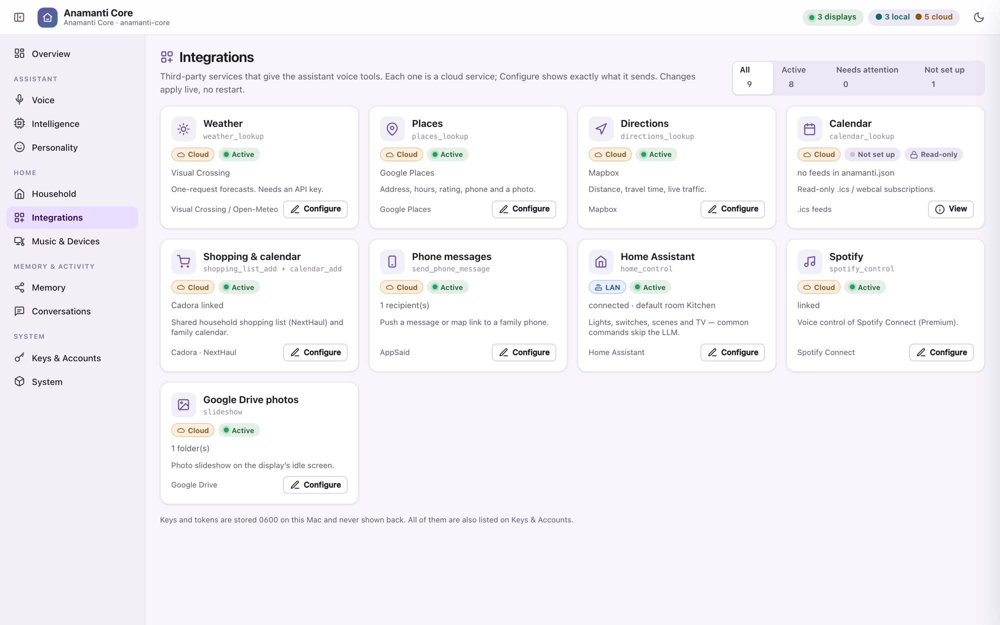
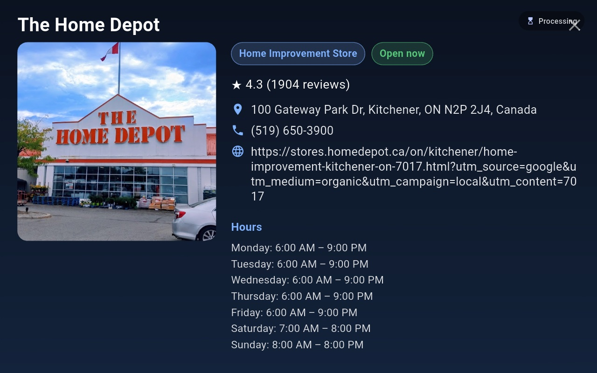
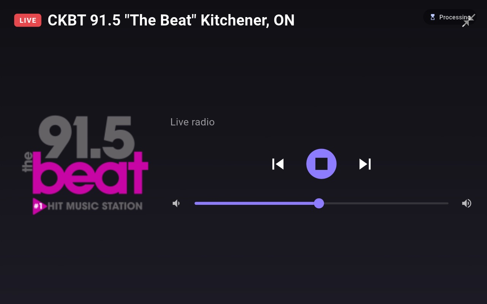
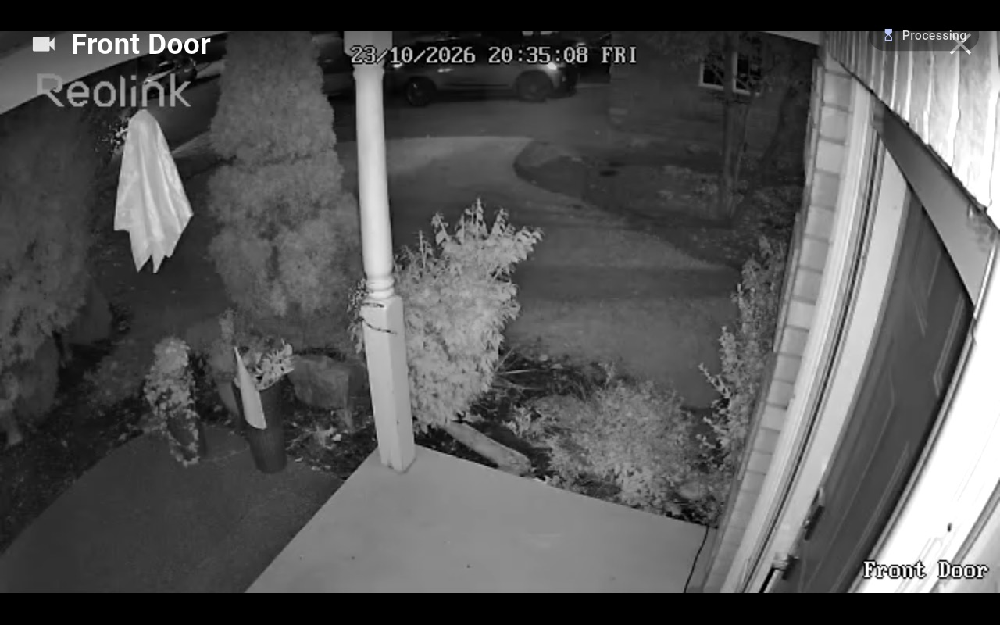

Integrations
It works with the things you already have.
Each integration is a voice tool the assistant can use, set up from the Core's console with nothing to restart. Each one carries a label for where it runs and a plain-English note on what it sends. Tools you haven't set up are never offered to the model.
On this Mac Your network Cloud

Highlights
Three integrations that change the feel of the house.
Home Assistant · Your network
Lights without the wait
Common commands never reach a language model. The Core keeps a cached list of your Home Assistant devices, matches the request in plain code, and makes one direct call to Home Assistant, with no model in the loop, then confirms with a fixed phrase. It knows which room you're in, so “turn off the lights” means this room. If it isn't sure, it hands the request to the model instead of guessing.
“Turn off the kitchen lights.” “Turn on the fireplace.”
Spotify + Snapcast · Mac Spotify
Music in every room, in sync
librespot makes the Mac a Spotify Connect speaker, and Snapcast plays it in sync on every speaker in the house. Music ducks while the assistant talks, and the audio never passes through the Core. Internet radio plays through the same speakers, with station logos from Radio Browser.
“Play some Jessie Reyez.” “Next station.” “Make the music full screen.”
Reolink NVR · Your network
Who's at the door?
A fast path recognises the request and the display that asked opens the camera's live stream straight from the NVR. The video never touches the cloud or the Mac, and the NVR password stays on the Mac. The view closes after a minute.
“Show me the front door.” “Close the camera.”



The full list
Every service, and where it runs.
| Service | What it's used for | Where |
|---|---|---|
| Home | ||
| Home Assistant | Lights, switches, scenes and TV, through a no-model fast path with the model as fallback | Network |
| Reolink NVR | Live camera view on the display that asked | Network |
| Google Drive / Google Photos | The idle photo slideshow; the display fetches the photos directly | Cloud |
| Music | ||
| Spotify (Premium) | Search, play, queue and transport by voice; librespot as the Connect speaker | Cloud |
| Snapcast · librespot · mpv | Synchronised multiroom playback, ducked while the assistant speaks | Mac |
| Internet radio + Radio Browser | Your station list, with names and logos looked up automatically | Cloud |
| Family | ||
| Cadora / NextHaul | Add to the shared shopping list and the family calendar | Cloud |
| AppSaid | Send a message or a map link to a family member's phone | Cloud |
| Calendars (.ics / webcal) | Read-only “what's on?”, with recurring events expanded | Cloud |
| Out and about | ||
| Visual Crossing / Open-Meteo | Forecasts, the full-screen weather view and the weather beside the clock (Open-Meteo needs no key) | Cloud |
| Google Places | Place cards: hours, open now, rating, phone, photo | Cloud |
| Mapbox | Directions, distance and travel time with live traffic | Cloud |
| Tavily / DuckDuckGo | Web search, and finding recipes (DuckDuckGo needs no key) | Cloud |
| The AI itself | ||
| Ollama | Open-weights language models on your own hardware | Mac Network |
| Anthropic Claude | The language model (API key or Claude subscription) and optional memory entity extraction | Cloud |
| OpenAI | The language model, or optional cloud embeddings | Cloud |
| OpenRouter (Jev) | A hosted System-1 fast-decision classifier | Cloud |
| Laya-Decision | A local System-1 classifier running alongside the Core | Mac |
| Whisper (faster-whisper / whisper.cpp) | Speech-to-text | Mac |
| ElevenLabs Scribe | Real-time cloud speech-to-text | Cloud |
| Piper | Text-to-speech, with 174 voices installed here | Mac |
Keys and tokens are stored on the Mac in owner-only files, entered only in the Mac's console, and never shown back. The display app contains no credentials: for Google Drive, you sign in once on the Mac, and each display collects its photo access from the Core over the local network.
Music & devices
One page for the house's speakers and screens.
See every connected display and choose how each one shows music: automatic (full screen on the display that asked, a small bar everywhere else), always small, or always full screen. Start and stop the multiroom audio processes, adjust Snapcast groups, and play a stream URL through the whole house.